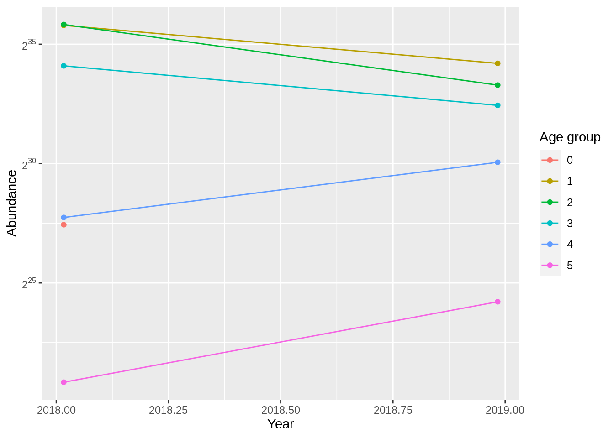
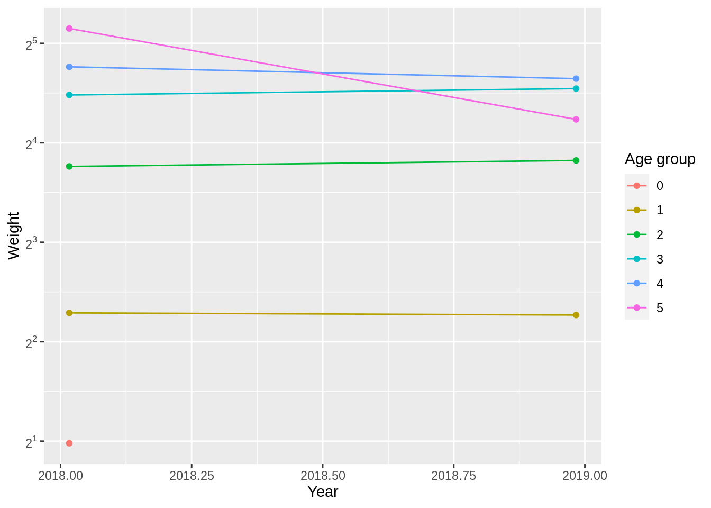

4 REDUSTOOLS Standalone Example
This guide shows you a step-by-step guide on how to run a standalone REDUStools with an XML recipe to process a survey time series.
4.1 Preparing the master recipe
For this example we will use an the
Barents Sea capelin acoustic abundance estimate in autumn
survey time series. Below is an example recipe and we save the xml
into assets/barents_sea_capelin_acoustic_autumn.xml file.
<?xml version="1.0" encoding="UTF-8"?>
<redus_master xmlns="http://www.imr.no/formats/redus/master/v0.1" revision="1" version="0.1">
<configuration>
<useLatestRstox>true</useLatestRstox>
<saveOutputTable>true</saveOutputTable>
<saveOutputStatics>true</saveOutputStatics>
<saveRunStatus>true</saveRunStatus>
<generateAssessmentFiles>true</generateAssessmentFiles>
</configuration>
<globalParameter>
<!-- <fileFix from="biotic_cruiseNumber_1994001_Anny+Kræmer.xml" to="biotic_cruiseNumber_1994001_Anny+Kræmer.xml"/> -->
</globalParameter>
<parameters sts="Barents Sea capelin acoustic abundance estimate in autumn" revision="1" version="0.1">
<configuration>
<stsName>Barents Sea capelin acoustic abundance estimate in autumn</stsName>
<overwriteNMD>false</overwriteNMD>
<forceReProcess>true</forceReProcess>
<forceBioticV3>true</forceBioticV3>
<skipYear></skipYear>
<startYear>2018</startYear>
<endYear>2019</endYear>
<levelRequested>bootstrapImpute</levelRequested>
<bootstrapSeed>77</bootstrapSeed>
<bootstrapImputeSeed>101</bootstrapImputeSeed>
<bootstrapIter>5</bootstrapIter>
<coresUse>1</coresUse>
<groupType>age</groupType>
<minAge>1</minAge>
<maxAge>12</maxAge>
<plusAge>7</plusAge>
<numberScale>1000000</numberScale>
<dataType>survey</dataType>
<applyOverrides>false</applyOverrides>
</configuration>
<override>
<!-- <parameter name="UseProcessData">true</parameter> -->
</override>
</parameters>
</redus_master>4.2 Running the process
4.2.1 Setup
First, we setup and install the necessary packages. Setting up
the environment is necessary, otherwise by default REDUStools will
try to use the /data/REDUS directory which might not available
in your running platform.
install.packages("remotes")
remotes::install_github("SEA2DATA/Rstox", ref="develop")
remotes::install_github("REDUS-IMR/REDUStools")
# Without the below command, the result data will be put in /data/REDUS directory
# or REDUStools:::getConfig()$root.dir
# Setting it to "docker" means we will use the current active directory
Sys.setenv(R_CONFIG_ACTIVE = "docker")4.2.2 Process
Now we process the survey time series. Wait for a while as it can take some time to finish. In the end we will print out the processing status.
4.2.3 Examine data
After the above is finised, let’s load the data to examine it.
# Get the data
stsdata <- REDUStools::loadSTS("Barents Sea capelin acoustic abundance estimate in autumn")
# Get the metadata
print(stsdata$meta)## $stsName
## [1] "Barents Sea capelin acoustic abundance estimate in autumn"
##
## $overwriteNMD
## [1] "false"
##
## $forceReProcess
## [1] "true"
##
## $forceBioticV3
## [1] "true"
##
## $skipYear
## [1] ""
##
## $startYear
## [1] "2018"
##
## $endYear
## [1] "2019"
##
## $levelRequested
## [1] "bootstrapImpute"
##
## $bootstrapSeed
## [1] "77"
##
## $bootstrapImputeSeed
## [1] "101"
##
## $bootstrapIter
## [1] "5"
##
## $coresUse
## [1] "1"
##
## $groupType
## [1] "age"
##
## $minAge
## [1] "1"
##
## $maxAge
## [1] "12"
##
## $plusAge
## [1] "7"
##
## $numberScale
## [1] "1000000"
##
## $dataType
## [1] "survey"
##
## $applyOverrides
## [1] "false"## $buildTime
## [1] "Wed Sep 22 10:48:40 2021"
##
## $masterRev
## [1] "da572dd7aa46857b9cddc98ef4ad72df79f8fe2c"
##
## $rstoxRev
## [1] "41beebdf85a1b6c0b29b8e436b6f42d2d738d6a6"
##
## $rstoxVer
## [1] "1.11.1"
##
## $RVer
## [1] "R version 4.0.5 (2021-03-31)"## year .id age Ab.Sum Weight.Sum
## 1: 2018 1 NA NA NA
## 2: 2018 1 0 1.858158e+08 454321187
## 3: 2018 1 1 5.658849e+10 267453782819
## 4: 2018 1 2 5.127899e+10 722402520609
## 5: 2018 1 3 1.940289e+10 455744734005
## 6: 2018 1 4 6.479721e+07 1620497372
## 7: 2018 1 5 NA NA
## 8: 2018 2 NA NA NA
## 9: 2018 2 0 NA NA
## 10: 2018 2 1 7.047482e+10 349774718001
## 11: 2018 2 2 6.908417e+10 947886811679
## 12: 2018 2 3 2.261514e+10 522400804296
## 13: 2018 2 4 6.114607e+08 18433955563
## 14: 2018 2 5 NA NA
## 15: 2018 3 NA NA NA
## 16: 2018 3 0 2.603217e+08 520643347
## 17: 2018 3 1 4.544111e+10 215385339537
## 18: 2018 3 2 6.386157e+10 911724193299
## 19: 2018 3 3 2.324392e+10 550167185382
## 20: 2018 3 4 3.316548e+08 9108207475
## 21: 2018 3 5 6.766864e+05 24360709
## 22: 2018 4 NA NA NA
## 23: 2018 4 0 1.332267e+08 205449264
## 24: 2018 4 1 7.506643e+10 394085788882
## 25: 2018 4 2 7.204304e+10 916212362924
## 26: 2018 4 3 1.788082e+10 378488646657
## 27: 2018 4 4 3.223851e+08 8599669368
## 28: 2018 4 5 3.915266e+06 133119057
## 29: 2018 5 NA 5.228091e+06 240492163
## 30: 2018 5 0 1.697118e+08 339423576
## 31: 2018 5 1 5.468721e+10 261815864238
## 32: 2018 5 2 5.142159e+10 673885776263
## 33: 2018 5 3 1.139378e+10 232508748394
## 34: 2018 5 4 1.347231e+08 3608628164
## 35: 2018 5 5 2.481954e+06 90591328
## 36: 2019 1 NA 6.167043e+07 1490637572
## 37: 2019 1 1 1.974878e+10 85465126380
## 38: 2019 1 2 1.445034e+10 210927048730
## 39: 2019 1 3 9.356174e+09 224004815530
## 40: 2019 1 4 1.947998e+09 52440068749
## 41: 2019 1 5 NA NA
## 42: 2019 2 NA 3.952683e+07 928175090
## 43: 2019 2 1 2.009545e+10 79761515603
## 44: 2019 2 2 1.434316e+10 203721867124
## 45: 2019 2 3 7.205293e+09 179309120691
## 46: 2019 2 4 1.378739e+09 35294581838
## 47: 2019 2 5 5.876453e+07 1126320196
## 48: 2019 3 NA 1.016105e+07 161258027
## 49: 2019 3 1 1.939539e+10 107353585833
## 50: 2019 3 2 6.151520e+09 85506300359
## 51: 2019 3 3 4.102326e+09 90292191890
## 52: 2019 3 4 8.883581e+08 22206357748
## 53: 2019 3 5 NA NA
## 54: 2019 4 NA 1.932162e+07 97710541
## 55: 2019 4 1 1.969037e+10 113019879620
## 56: 2019 4 2 7.499155e+09 108603894416
## 57: 2019 4 3 4.110904e+09 90754185897
## 58: 2019 4 4 7.817540e+08 18208339390
## 59: 2019 4 5 NA NA
## 60: 2019 5 NA 5.635425e+07 0
## 61: 2019 5 1 1.968001e+10 93567753075
## 62: 2019 5 2 1.324392e+10 179881310966
## 63: 2019 5 3 5.883584e+09 140796382520
## 64: 2019 5 4 9.236369e+08 22534407539
## 65: 2019 5 5 6.404967e+06 118491889
## year .id age Ab.Sum Weight.Sum## year .id LenGrp age Ab.Sum Weight.Sum
## 1: 2018 1 8 NA NA NA
## 2: 2018 1 8 0 185815828 454321187
## 3: 2018 1 8 1 6278731952 13913299442
## 4: 2018 1 8 2 NA NA
## 5: 2018 1 8 3 NA NA
## ---
## 1676: 2019 5 20 1 NA NA
## 1677: 2019 5 20 2 NA NA
## 1678: 2019 5 20 3 NA NA
## 1679: 2019 5 20 4 NA NA
## 1680: 2019 5 20 5 NA NA4.2.4 (Optional) Making a nice single page visualization
You can generate a nice static page with graphs and tables (also in PDF and CSV formats) by running this piece of code below.
# Now make a nice multi-format output:
REDUStools:::createStaticOutput("Barents Sea capelin acoustic abundance estimate in autumn", "./out")
# Point your browser to:
# ./out/Barents Sea capelin acoustic abundance estimate in autumn/output/index.htmlBelow is an example of the output. The full output contains many other output formats.
Abundance

| Age group ( x 1e+06 ) | |||||||||||||||||||
| Year | 0 | 1 | 2 | 3 | 4 | 5 | |||||||||||||
| 2018 | 187 | . | 27 | 60451 | . | 61 | 61537 | . | 87 | 18907 | . | 31 | 293 | . | 00 | 2 | . | 36 | |
| 2019 | 0 | . | 00 | 19722 | . | 00 | 11137 | . | 62 | 6131 | . | 66 | 1184 | . | 10 | 32 | . | 58 | |
Weight

| Age group (in grams) | |||||||||||||||||||
| Year | 0 | 1 | 2 | 3 | 4 | 5 | |||||||||||||
| 2018 | 2 | . | 03 | 4 | . | 92 | 13 | . | 56 | 22 | . | 63 | 28 | . | 24 | 35 | . | 07 | |
| 2019 | 0 | . | 00 | 4 | . | 86 | 14 | . | 16 | 23 | . | 65 | 25 | . | 45 | 19 | . | 10 | |
Metadata
| param | value | |
| 1 | buildTime | Wed Sep 22 10:48:40 2021 |
| 2 | masterRev | da572dd7aa46857b9cddc98ef4ad72df79f8fe2c |
| 3 | rstoxRev | 41beebdf85a1b6c0b29b8e436b6f42d2d738d6a6 |
| 4 | rstoxVer | 1.11.1 |
| 5 | RVer | R version 4.0.5 (2021-03-31) |